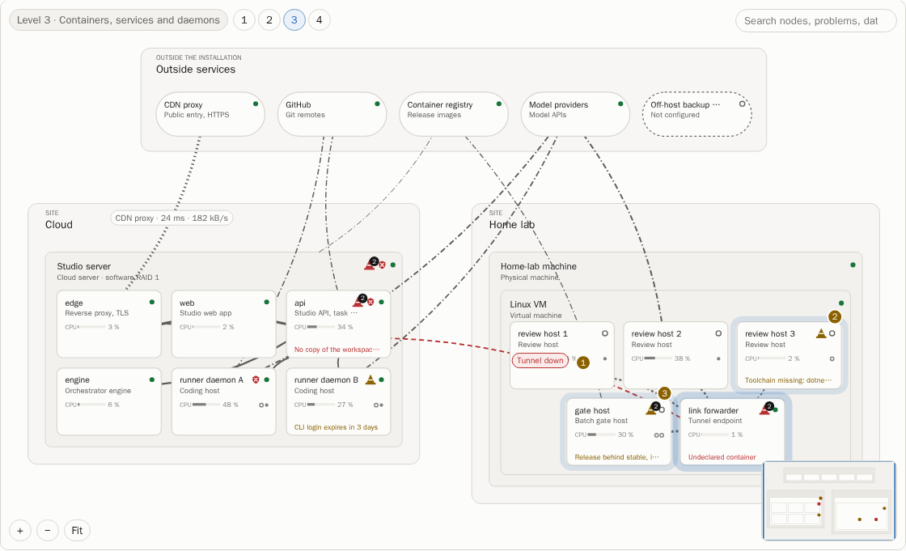
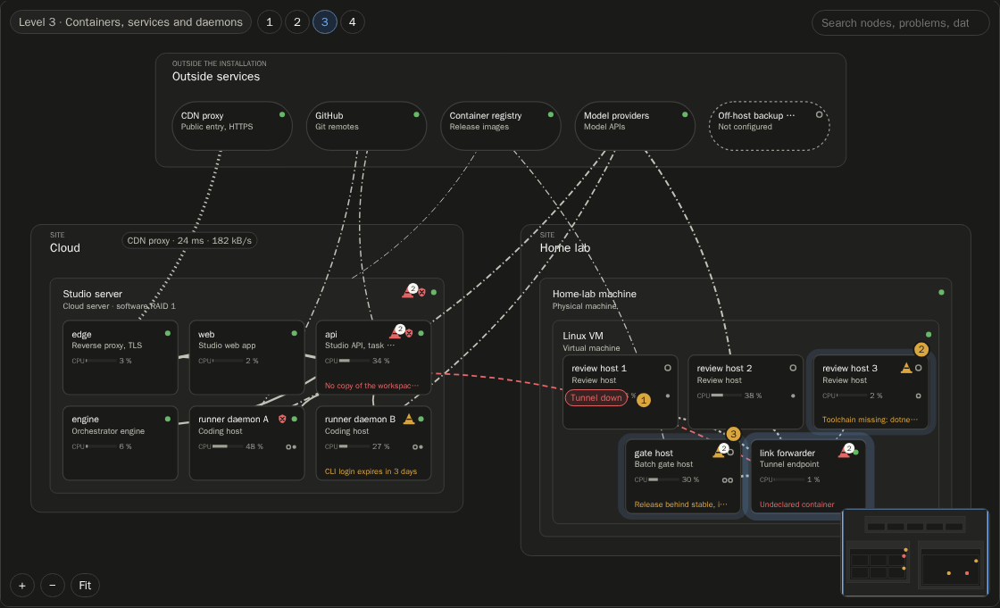

Concept Dossier · AGT-3955 · Live structure canvas
Live updates and assessments
Motion that carries meaning, updates as batched deltas with a replay, and assessments authored by personas as validated view specifications on top of plain facts.
Motion and live updates
Nothing moves without a cause. Every animation maps to a fact change, and the event log says the same in words.
| Cause | Motion | Without motion |
|---|---|---|
| Traffic on a link | Particles along the link; density follows traffic, speed is constant; at most 30 frames a second | Link width follows traffic |
| Work moves (coding finished, gate passed, review passed) | A token in the work-kind colour travels hop by hop from coding host to gate to review and back, labelled with card and step | The running-work list inside the services changes; log line |
| A deploy step runs on a node | An arc circles the node while the step runs | Step text inside the service; log line |
| A container restarts | A grey wash drains away, then a short green ring | Health dot changes; log line |
| A link drops | A short red ring at both ends; the link breaks with a gap and a cross | The broken link and its label |
| A value changes (CPU, disk, slots) | Gauges and block heights ease to the new value | The new value |
| A persona reassesses | Callouts and ranking change in the next update | Same |
Updates arrive as deltas from the structure stream of AGT-3954. The client queues them and applies everything that arrived in one visual update per second at most; the replay counts deltas received against visual updates. With prefers-reduced-motion the motion level is Off: state changes apply instantly and nothing animates. Rendering is on demand: no frame is drawn when nothing changes, flow particles run only while the canvas is on screen and the tab is visible, and a hidden tab stops all drawing until it returns, when the pending deltas apply as one update. The replay in the prototype plays a recording of 44 seconds. A screen recording of it is assets/replay-recording.webm (about 25 seconds at speed 2); the Studio's Dossier viewer does not play video, so six moments of it follow as stills.
Replay

capture.mjs during a live replay at speed 1, motion Lively, light theme, 1440 px.
Link down, clearly broken
capture.mjs.Assessments by personas
Facts and assessments are separate. Facts come from the APIs (structure, telemetry, deploy records, /api/operator/backups) and are always drawn the same way. Assessments are produced case by case by a model call and draw on top: which location must be backed up and which is reproducible, risk and priority, callouts such as "no backup here" or "disk fills in about 21 days", which nodes to emphasise, the ranking of problems, a short judgement and the goal with its next steps. No hand-coded rule set decides these.
The assessments are authored by personas of the existing team, not redefined here. The role and persona model is the persona team Dossier, docs/persona-team/index.html: its Catalogue section already has the operations-warden (aspect operations: backups, restore tests, off-host copies, escrow, TLS, credentials) and the reliability-engineer (aspect reliability: runs, batches, latency, hosts), so no role is added. Scheduling, admission and the budget ledger are the persona team's (its sections Scheduling and Budgets); an assessment is a persona occurrence whose item is a view specification, and it also reaches the persona's feed and the magazine's operations watch like any other item (its sections Reporting and Magazine). The viewer picks the persona whose assessment the canvas shows; each shows author persona, time, model, confidence and the facts it used, and the raw specification is one click away.
View specification
The model returns a declarative document, structure-view-spec/v1; the schema is schema/structure-view-spec.v1.schema.json. It names nodes, links and warnings by id; it can enable layers as a suggestion, emphasise nodes, add up to six callouts, rank problems, state goals with steps, and write a headline and a judgement in plain text. It cannot carry code, markup, styles, colours or positions. The validator rejects unknown keys, markup in any text, references to nodes or links that do not exist in the current facts, and goals that report more done than total; the canvas then shows facts only and says why. Specifications are cached and versioned by persona and facts version, so the view loads with the last valid one instantly and shows when it was assessed. The example the prototype shows, the operations warden's revision 3, is schema/example-operations-warden.json: a headline, a judgement, confidence and the facts used, four callouts on nodes, the ranking of seven problems and the backup goal with its next three steps.
 Falls back to facts
Falls back to facts
capture.mjs.Refresh, cost and freshness
| Item | Value |
|---|---|
| Model | Capability class balanced resolved by ModelSelectionService for consumer persona, same-class fallback only; today that is Claude Sonnet 5.5 at $2 input, $10 output and $0.20 cached input per million tokens. |
| Tokens per assessment | About 5,000 input (3,500 of them a cached prefix: persona charter, schema, rules; 1,500 the compact facts digest) and 800 output. Priced: about $0.012 per assessment. |
| Triggers | A change of a relevant fact: backup state or a data location's copy, a new or closed problem of severity bad, a link down for more than 2 minutes, a disk pressure tier, a release drift. Coalesced per the persona team's windows (6 hours, 1 hour for floors of importance 90 and more). A schedule every 12 hours. A viewer's "reassess now" passes the same admission. |
| Calls per day | About 2 scheduled plus 1 to 4 triggered per persona; two personas: 6 to 12 calls, 35 to 70 kTokens, $0.07 to $0.15 a day. |
| Budget fit | About 20 to 40 kTokens per persona per week of the 60 to 160 kToken allowance; when an allowance is spent, the canvas keeps the last valid specification and marks it stale. |
| Freshness shown | "Assessed 21:30 UTC, 10 minutes ago, revision 3"; callouts whose referenced facts changed since are dropped until the next assessment. |
Captures
Every image and the recording this Dossier shows, read from the files by build.mjs: pixel size from the image header, viewport and theme from the capture run. A review that reads text only can check here that each layer exists in light and dark at 1440 px and 390 px and that the replay was recorded. The run itself is assets/capture-manifest.json. An element capture is narrower than its viewport: the canvas is 1120 px wide in the 1440 px page and 370 px wide in the 390 px page.
7 layers × light and dark × 1440 px and 390 px: 28 of 28 captures present. All 42 files are in assets/.
| File | Shows | Theme | Viewport, px | Pixels | Captured |
|---|---|---|---|---|---|
assessment-rejected-dark-1440.png | Rejected view specification, facts-only fallback | dark | 1440 | 367 × 181 | 2026-11-20 |
assessment-rejected-light-1440.png | Rejected view specification, facts-only fallback | light | 1440 | 367 × 181 | 2026-11-20 |
layer-backup-dark-1440.png | Layer Backup, only this layer on | dark | 1440 | 1120 × 681 | 2026-11-20 |
layer-backup-dark-390.png | Layer Backup, only this layer on | dark | 390 | 370 × 681 | 2026-11-20 |
layer-backup-light-1440.png | Layer Backup, only this layer on | light | 1440 | 1120 × 681 | 2026-11-20 |
layer-backup-light-390.png | Layer Backup, only this layer on | light | 390 | 370 × 681 | 2026-11-20 |
layer-drift-dark-1440.png | Layer Drift, only this layer on | dark | 1440 | 1120 × 681 | 2026-11-20 |
layer-drift-dark-390.png | Layer Drift, only this layer on | dark | 390 | 370 × 681 | 2026-11-20 |
layer-drift-light-1440.png | Layer Drift, only this layer on | light | 1440 | 1120 × 681 | 2026-11-20 |
layer-drift-light-390.png | Layer Drift, only this layer on | light | 390 | 370 × 681 | 2026-11-20 |
layer-health-dark-1440.png | Layer Health, only this layer on | dark | 1440 | 1120 × 681 | 2026-11-20 |
layer-health-dark-390.png | Layer Health, only this layer on | dark | 390 | 370 × 681 | 2026-11-20 |
layer-health-light-1440.png | Layer Health, only this layer on | light | 1440 | 1120 × 681 | 2026-11-20 |
layer-health-light-390.png | Layer Health, only this layer on | light | 390 | 370 × 681 | 2026-11-20 |
layer-perf-dark-1440.png | Layer Performance and network, only this layer on | dark | 1440 | 1120 × 681 | 2026-11-20 |
layer-perf-dark-390.png | Layer Performance and network, only this layer on | dark | 390 | 370 × 681 | 2026-11-20 |
layer-perf-light-1440.png | Layer Performance and network, only this layer on | light | 1440 | 1120 × 681 | 2026-11-20 |
layer-perf-light-390.png | Layer Performance and network, only this layer on | light | 390 | 370 × 681 | 2026-11-20 |
layer-storage-dark-1440.png | Layer Storage, only this layer on | dark | 1440 | 1120 × 681 | 2026-11-20 |
layer-storage-dark-390.png | Layer Storage, only this layer on | dark | 390 | 370 × 681 | 2026-11-20 |
layer-storage-light-1440.png | Layer Storage, only this layer on | light | 1440 | 1120 × 681 | 2026-11-20 |
layer-storage-light-390.png | Layer Storage, only this layer on | light | 390 | 370 × 681 | 2026-11-20 |
layer-version-dark-1440.png | Layer Version, only this layer on | dark | 1440 | 1120 × 681 | 2026-11-20 |
layer-version-dark-390.png | Layer Version, only this layer on | dark | 390 | 370 × 681 | 2026-11-20 |
layer-version-light-1440.png | Layer Version, only this layer on | light | 1440 | 1120 × 681 | 2026-11-20 |
layer-version-light-390.png | Layer Version, only this layer on | light | 390 | 370 × 681 | 2026-11-20 |
layer-warnings-dark-1440.png | Layer Construction sites and warnings, only this layer on | dark | 1440 | 1120 × 681 | 2026-11-20 |
layer-warnings-dark-390.png | Layer Construction sites and warnings, only this layer on | dark | 390 | 370 × 681 | 2026-11-20 |
layer-warnings-light-1440.png | Layer Construction sites and warnings, only this layer on | light | 1440 | 1120 × 681 | 2026-11-20 |
layer-warnings-light-390.png | Layer Construction sites and warnings, only this layer on | light | 390 | 370 × 681 | 2026-11-20 |
level-1-light-1440.png | Semantic zoom level 1 | light | 1440 | 1120 × 681 | 2026-11-20 |
level-2-light-1440.png | Semantic zoom level 2 | light | 1440 | 1120 × 681 | 2026-11-20 |
level-3-light-1440.png | Semantic zoom level 3 | light | 1440 | 1120 × 681 | 2026-11-20 |
level-4-light-1440.png | Semantic zoom level 4 | light | 1440 | 1120 × 681 | 2026-11-20 |
replay-filmstrip-light-1440.png | Six moments of the live replay with captions | light | 1440 | 1440 × 1294 | 2026-11-20 |
replay-recording.webm | Screen recording of the replay at speed 2, about 25 seconds | light | 1440 | 1280 × 800, WebM | 2026-11-20 |
replay-tunnel-down-dark-1440.png | Replay at second 25, tunnel down | dark | 1440 | 1120 × 681 | 2026-11-20 |
replay-tunnel-down-light-1440.png | Replay at second 25, tunnel down | light | 1440 | 1120 × 681 | 2026-11-20 |
today-structure-view-dark--mocked.png | Today's Structure view of the product, role-named API fixture | dark | 1600 | 1312 × 860 | 2026-11-17 |
today-structure-view-light--mocked.png | Today's Structure view of the product, role-named API fixture | light | 1600 | 1312 × 860 | 2026-11-17 |
view-25d-light-1440.png | 2.5D view of the same scene | light | 1440 | 1120 × 681 | 2026-11-20 |
view-2d-light-1440.png | 2D view, Performance and Health layers | light | 1440 | 1120 × 681 | 2026-11-20 |